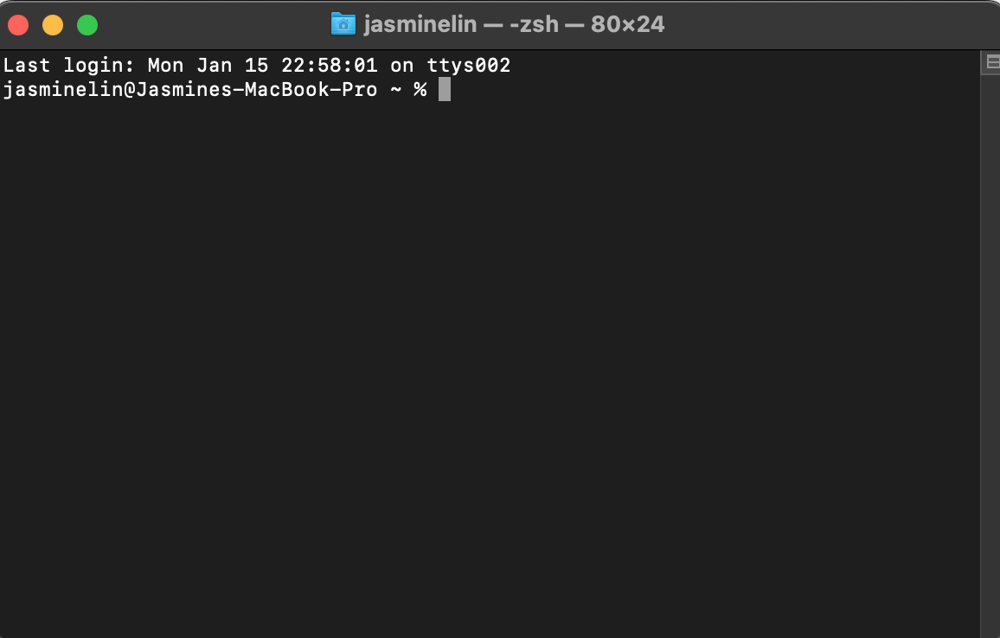
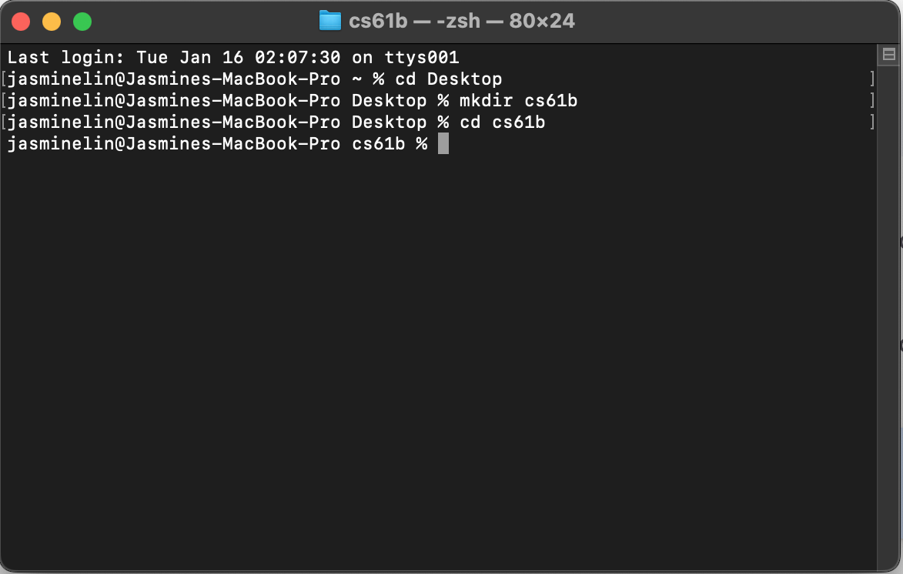
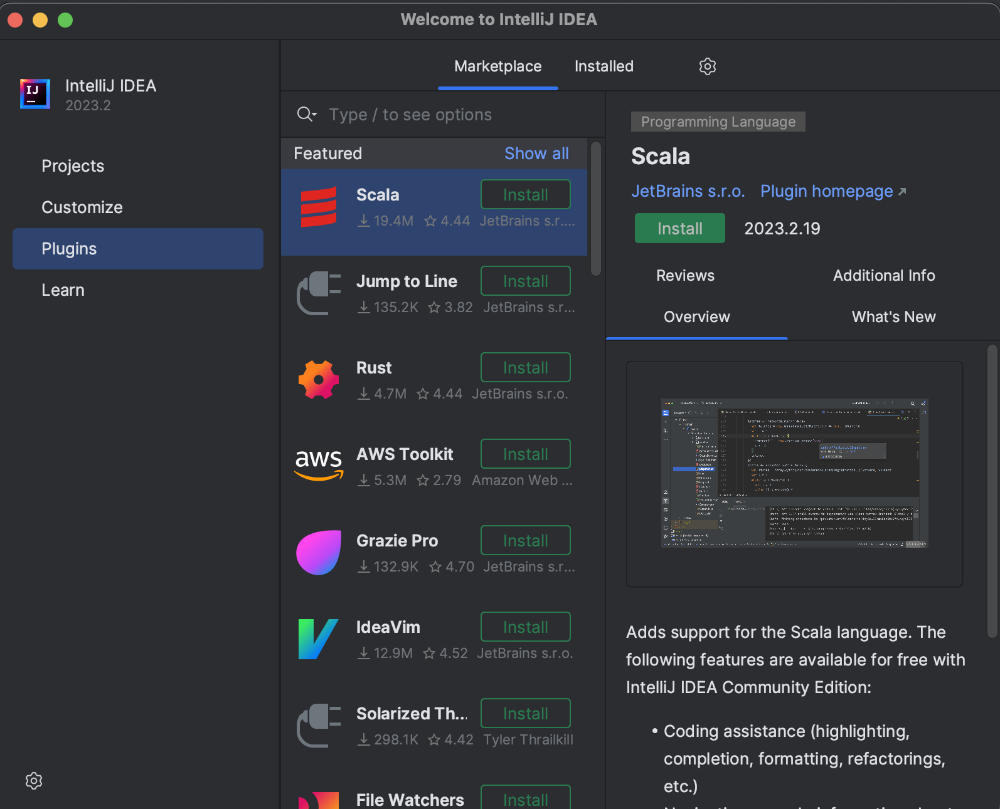
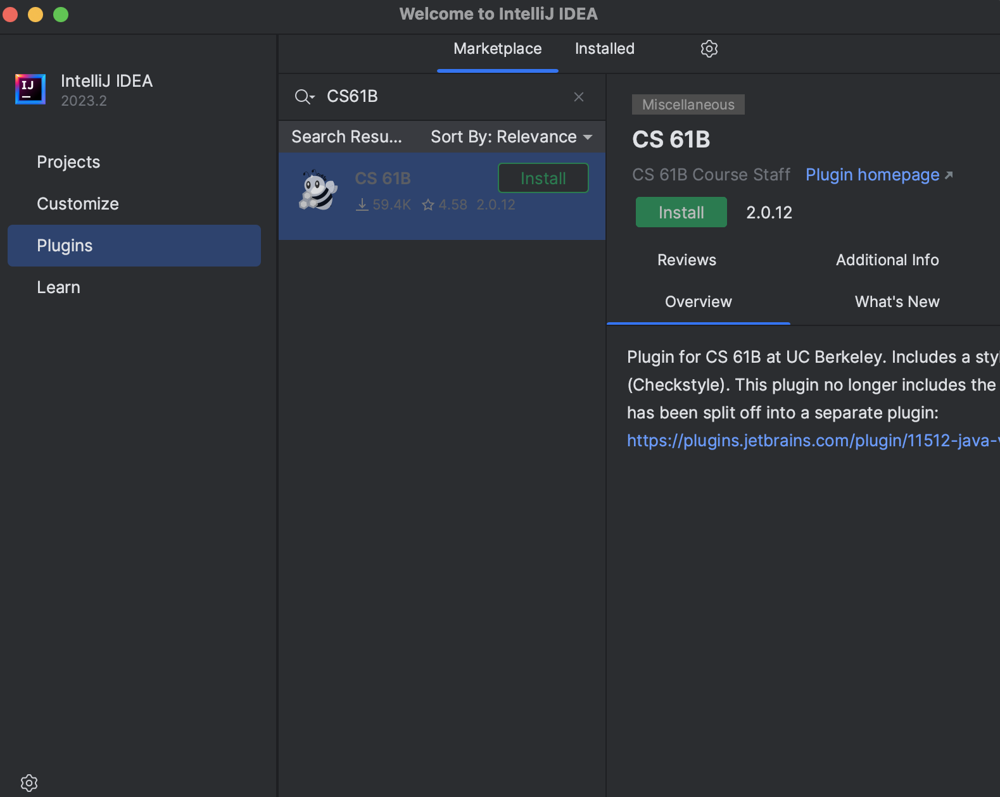
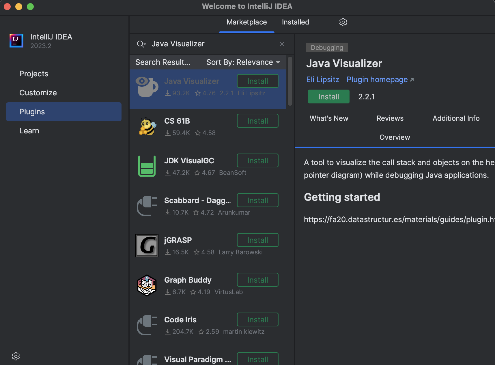
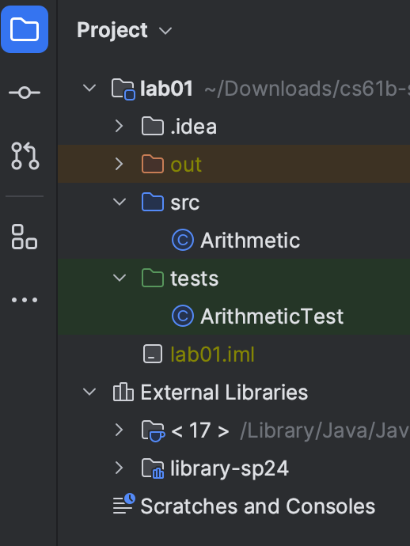
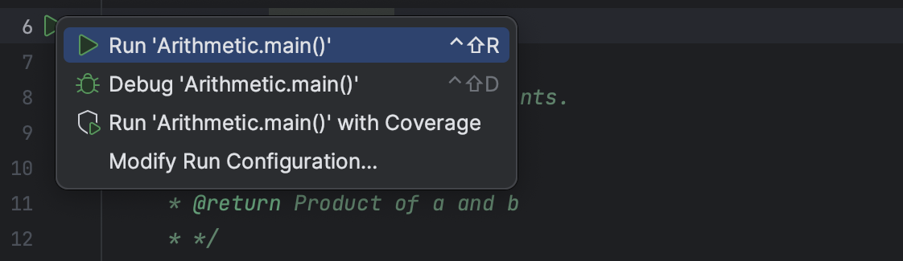
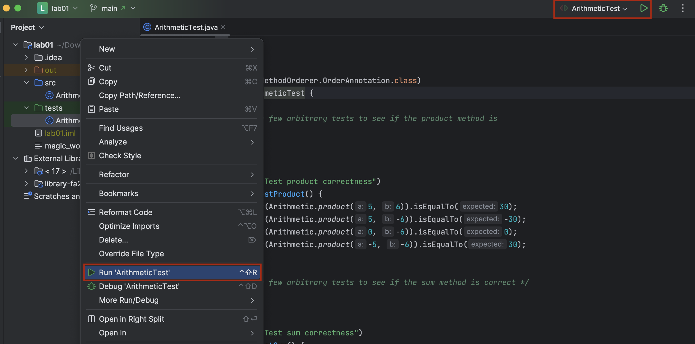
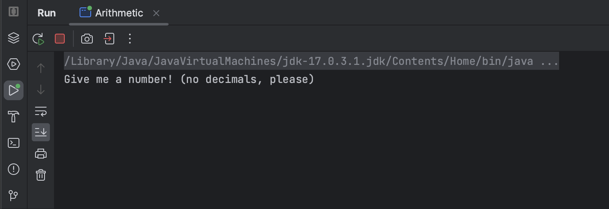
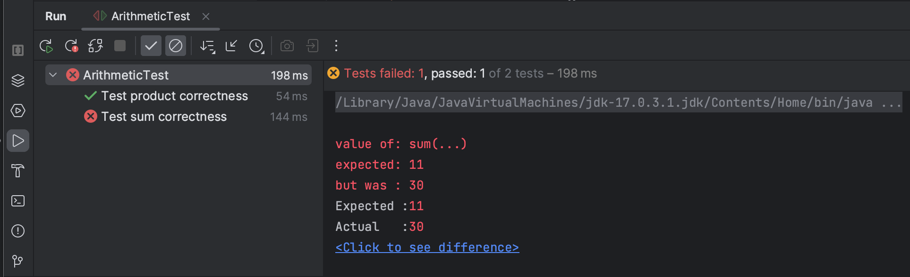

实验 01：环境配置
常见问题
每个作业都会有一个链接在顶部的常见问题。实验1的常见问题位于 此处 。 常见问题（frequently asked questions）是学生经常遇到的问题和错误的汇总，
欢迎来到 计算机科学 61B！
我们非常高兴本学期能与您一起学习！在开始之前，您需要有一台可以用来完成作业的电脑。在本课程中，您将使用真实世界的工具，这意味着您可能会遇到真实世界的问题。这些都是困难的问题，软件工程师每天都会遇到它们！ 不要气馁 ，如果您遇到困难，一定要寻求帮助！
我们强烈建议参加实验课，并在实验课期间寻求帮助。如果您在实验课之外学习，可以在 Ed 上提问或参加办公时间。
如果某些东西不工作， 不要 继续尝试随机的方法！相反，请寻求帮助。 您的实验助教将告诉您如何加入队列。他们可能选择使用白板队列 或 在线办公时间队列 。
一般来说，当您等待时，您应该 继续进行作业的下一步 （如果可能的话）。
合作伙伴
计算机科学 61B 的实验是 个人 的。这意味着您需要编写并提交您自己的代码。特别是实验1，您需要设置自己的电脑。
但是，我们强烈鼓励与其他学生一起合作！面对面的实验课是寻找小组的绝佳场所。
目标与工作流程
在本实验中，我们将完成本课程中将使用的软件设置。这包括终端、git、Java 和 IntelliJ 的介绍。我们还将通过一个小的 Java 程序来熟悉 Java 语言！
这个实验会很漫长！ 不要跳过任何步骤！
个人电脑设置
任务：安装 Git
安装方式因操作系统而异。
按照您操作系统的指南安装软件。
终端
终端指南
在 CS61B 中，我们将广泛使用终端来处理 git。终端还有一些其他命令可以让您处理文件夹或文件。我们在此简要指南中整理了这些命令，请务必阅读： 如何使用终端 。
在终端中，您可以使用指南中的指定命令在不同目录之间移动、创建新文件、列出当前目录中的文件等。您将在本实验以及未来的作业中广泛使用终端，特别是用于提交作业。
请阅读终端指南并熟悉这些命令！您也可以收藏此页面以供将来参考。
GitHub 和 Beacon 账户
概述
计算机科学 61B 使用名为 Beacon 的内部系统来集中管理成绩和学生信息，而不是使用 bCourses。
在本节中，我们将设置您的 Beacon 账户以及您的 计算机科学 61B GitHub 仓库（"repo"），您将需要它来提交所有编程作业。
任务：设置账户
- 在 GitHub 上创建一个账户。如果您已经有账户，则不需要创建新账户。
- 前往 Beacon 并按照步骤完成您的 GitHub 仓库注册。您必须登录您的 伯克利 账户才能完成 Google 表格 syllabus 测验。
- 完成所有步骤后，您将收到一封电子邮件，邀请您协作处理课程 GitHub 仓库。接受电子邮件邀请以获取课程仓库的访问权限。此电子邮件将发送到 您用于创建 GitHub 账户的电子邮件，该电子邮件可能不一定是您的 Berkeley 电子邮件 。
不要按照 GitHub 提示您可能想做的说明操作。我们在本实验的后续部分有自己的说明。
按照上述步骤创建您的 GitHub 和 Beacon 账户，并连接它们。
您的仓库
您的仓库将有一个包含唯一编号的名称。例如，如果您的仓库叫"
sp24-s1
"，您将能够访问您的私有仓库
at
https://github.com/伯克利-CS61B-Student/sp24-s1
（当登录 GitHub 时）。
您的学号不是"1"，所以这个链接对您不起作用。请将"1"替换为您自己的编号以在 GitHub 上查看您的仓库。
此外， 课程工作人员将能够查看您的仓库。 这意味着您可以在 Ed 或 Gitbugs 上私下提问调试问题时链接到您的代码。其他学生将无法查看您的仓库。
提醒您，您不得公开发布本课程的代码，即使在完成课程之后。这样做违反了我们的课程政策，您可能面临纪律处分。
Git
Git 基础
在本课程中，您需要使用 Git 版本控制系统，它在现实世界中几乎是通用的。由于其背后的抽象概念相当复杂，如果您在使用它时遇到很大的挫折感，请不要担心。
在继续之前， 阅读 Git 使用指南 直到远程仓库部分 。您不需要阅读超过该部分的内容。这是为了帮助您大致了解 Git 是什么。
任务：设置 Git
在使用 git 之前，我们需要配置一些简短的命令。
首先，打开您的终端。它看起来像这样：

然后，使用以下两个命令设置 git 将使用的名称和电子邮件：
git config --global user.name "<your name>"
git config --global user.email "<your email>"
设置 git 的默认分支名称：
git config --global init.defaultBranch main
设置"合并策略"：
git config --global pull.rebase false
我们还将更改与 git 关联的文本编辑器。有时，git 在输入诸如提交消息等内容时需要您的帮助，因此它会为您打开一个文本编辑器。默认编辑器是
vim
，它以难以使用而闻名。我们为本课程推荐
nano
，但您可以自由使用任何您喜欢的编辑器。
按照 此处的说明 进行操作。这将配置 Git 的默认编辑器（确保您按照正确的操作系统说明进行操作）。
按照上述说明配置 git，并设置您喜欢的编辑器。
Git 和远程仓库
首先，请阅读 使用 Git 指南 的 远程仓库 部分。
在本课程中，您需要使用 git 将代码提交到您在 账户设置 中创建的课程 GitHub 仓库。这样做有几个原因：
- 让您免于丢失文件的巨大痛苦。
- 提交您的作业以供评分，并从自动评分器获取结果。
- 让您免于因对文件进行未知更改而导致一切崩溃的巨大痛苦。
- 确保我们可以轻松访问您的代码，以便在您遇到困难时提供帮助。
- 阻止您将解决方案发布在公共 GitHub 仓库的网络上 。这是严重违反课程政策的行为！
- 让您接触到真实的工作流程，这在您未来从事的每个主要项目中都很常见。
任务：Git 仓库和 Java 库
Java 库
像 Python 一样，我们有时想使用别人编写的库。Java 依赖管理有点混乱，所以我们提供了一个包含本课程将使用的所有依赖项的 git 仓库。同样，确保您的终端已打开。
导航到您想要存储库的文件夹。对于本实验，我们假设您将所有内容放在一个名为
cs61b
的文件夹中。如果您愿意，可以选择不同的名称。这是在导航到您想要的位置、创建
cs61b
目录并进入其中之后的样子（在此示例中为
cd cs61b
）：

进入文件夹后，运行：
git clone https://github.com/Berkeley-CS61B/library-sp24
以下是
library-sp24
的目录结构。使用
ls library-sp24
查看文件夹内部，确保您看到下面列出的
.jar
文件。还有很多，但我们只列出前几个。如果您使用的是操作系统的文件资源管理器，
jar
部分可能不会显示在文件名中，这没关系。
library-sp24
├── algs4.jar
├── animated-gif-lib-1.4.jar
├── antlr4-runtime-4.11.1.jar
├── apiguardian-api-1.1.2.jar
└── ...
按照上述说明获取课程库。
使用 Github 进行身份验证
首先，在终端中运行以下命令。它将打印您拥有的任何 SSH 密钥（如果不存在则生成一个新的）：
curl -sS https://sp24.datastructur.es/labs/lab01/get-ssh-key.sh | bash
如果收到错误信息，如
bash: line 1: syntax error near unexpected token 'newline'
，请尝试刷新此页面并运行更新后的命令。
使用提供的路径，运行以下命令，确保将
<path_to_ssh_key>
替换为 SSH 密钥的路径，
并附加
.pub
后缀
。
cat <path_to_ssh_key>.pub
运行上述命令的结果应该产生类似于以下格式的内容：
ssh-ed25519 AAAAC3NzaC1lZDI1N6jpH3Bnbebi7Xz7wMr20LxZCKi3U8UQTE5AAAAIBTc2HwlbOi8T [some-comment-here]
然后，从终端复制输出。
[some-comment-here]
将取决于系统，可能因个人而异。将输出复制后，前往
Github，设置，SSH，GPG 密钥，新建 SSH 密钥
（或点击链接），并将输出粘贴到密钥部分。
为密钥命名，以便记住它所在的设备或您认识到它是用于什么的，并选择密钥类型为身份验证密钥
。然后，将密钥添加到您的账户。
在终端中，运行以下命令以使用 SSH 连接到 Github：
ssh -T git@github.com
如果一切顺利，您应该会看到类似以下内容：
Hi USERNAME! You've successfully authenticated, but GitHub does not provide shell access.
您现在应该已成功通过 Github 身份验证，可以继续了！
配置个人仓库
现在是时候克隆您的个人仓库了。与库一样，导航到您想要保存仓库的文件夹。我们建议它与您存储 Java 库的文件夹相同（例如
cs61b
）。
不要将您的仓库放在
library-sp24
文件夹内。这会在将来造成麻烦。例如，它会在
cs61b
文件夹内，但不在
library-sp24
文件夹内（可能与库在同一级别）。
请确保将
***
替换为您的班级仓库编号（您可以在 Beacon 上找到此仓库编号）。
然后运行以下命令：
git clone git@github.com:Berkeley-CS61B-Student/sp24-s***.git
克隆后，您的终端会报告
warning: You appear to have cloned
an empty repository.
这不是问题，这只是 git 告诉您仓库中没有文件。
进入您新创建的仓库！
cd sp24-s***
确保我们使用的是预期的分支名
main
：
git branch -M main
现在，我们将添加
skeleton
远程仓库。
我们将作业的起始代码添加到
skeleton
，您将从那里拉取（请确保您在运行此命令之前位于新创建的仓库中！）。
git remote add skeleton https://github.com/Berkeley-CS61B/skeleton-sp24.git
列出远程仓库现在应该同时显示
origin
和
skeleton
远程仓库。
git remote -v
如果看到像
fatal: not a git repository
这样的错误，请确保您已使用
cd
正确进入
sp24-s***
目录。
按照上述步骤克隆并配置您的仓库。
获取框架代码
skeleton 远程仓库包含所有作业的框架代码。每当发布新作业，或者我们需要更新作业时，您将从 skeleton 拉取。首先确保您在
sp24-s***
仓库目录中。
接下来，运行以下命令获取实验 1 的框架代码：
git pull skeleton main
此时，您应该有一个
lab01
文件夹，其中包含
src/Arithmetic.java
和
tests/ArithmeticTests.java
。如果您
没有这些内容
，请不要手动创建！相反，请从 skeleton 拉取或联系工作人员。
任务：IntelliJ 配置
IntelliJ 是一个集成开发环境（IDE）。IDE 是一个单一程序，结合了源代码编辑器、编译和运行代码的工具以及调试器。一些像 IntelliJ 这样的 IDE 包含更多功能，如集成终端和 git 命令的图形界面。最后，IDE 还有代码补全等工具，可以帮助您更快地编写 Java 代码。
我们 强烈 推荐使用 IntelliJ。我们的测试是用 IntelliJ 编写的，我们将在以后的实验中明确使用其调试器。此外，IntelliJ 是一款行业标准工具，如果您以后再次使用 Java，几乎肯定会遇到它。
我们将假设您正在使用 IntelliJ，并且不会为其他编辑器提供支持，包括 VSCode。
IntelliJ 是一个真实的工业软件开发应用程序。有许多功能我们不会使用，您有时会遇到没有意义的情况。 如果您遇到困难或某些内容似乎有问题，请寻求帮助！ 在 IntelliJ 中猜测正确的操作可能非常困难。请查看 IntelliJ WTFS 指南 以获取一些常见问题的解决方案。
在继续之前，请确保您已完成上述所有任务（git 练习除外）：
-
您已成功在自己的电脑上为课程创建了本地仓库。这是您之前的
sp24-s***仓库。 -
您已从 skeleton 拉取，并拥有一个
lab01目录。
安装 IntelliJ
-
从 JetBrains 网站下载 IntelliJ 社区版。作为学生，您实际上可以获得终极版的学生许可证，但我们不会使用任何额外功能。 建议您使用社区版并假设您将使用社区版。
当您点击链接时，您看到的第一个是终极版——确保向下滚动查找社区版。如果您有 M1 或 M2 Mac，请选择".dmg (Apple Silicon)"。否则，请选择".dmg (Intel)"。
- 选择适合您操作系统的版本后，点击下载并等待几分钟让文件完成下载。
- 运行安装程序。如果您有旧版本的 IntelliJ，您应该此时卸载它并用这个新版本替换。
在 IntelliJ 下载时，您可以阅读/浏览我们的 IntelliJ 使用指南 。您不需要阅读或内化所有这些内容来完成实验。IntelliJ 很复杂，但核心功能应该让您感觉与过去使用过的文本编辑器有些相似。
安装插件
打开 IntelliJ。然后按照以下步骤操作。
在继续之前，请确保您运行的是 2021.2 或更高版本的 IntelliJ。 这是因为我们将使用 Java 17 或更高版本。我们使用的是 IntelliJ 2023.2 版本 （图中所示），它有更新的用户界面。请注意，本实验中可能有较旧的 IntelliJ 屏幕截图——这没关系，因为总体布局仍然相对一致。
-
在 欢迎 窗口中，点击左侧菜单中的 "插件" 按钮。

-
在出现的窗口中，点击"市场"并在顶部搜索栏中输入"CS 61B"。 CS 61B 插件条目应该出现。 如果您点击自动完成建议，可能会出现与下面略有不同的窗口——这没关系。
-
点击绿色的 安装 按钮，等待插件下载和安装。

如果您有从前一学期安装的插件，请确保更新它。
-
现在，搜索"Java Visualizer"，点击绿色的 安装 按钮安装该插件。

-
重启（关闭并重新打开）IntelliJ。
有关使用插件的更多信息，请阅读 插件指南 。您现在不需要阅读这个。
安装 Java
这一步很重要！！
安装好 IntelliJ 和插件后，我们就可以安装 JDK 了。请按照以下步骤操作：
- 启动 IntelliJ。如果没有打开的项目，请点击"打开"按钮。如果当前有项目打开，请导航到"文件 → 打开"。
-
找到并选择当前作业的目录。例如，对于实验 1，您应该选择
sp24-s***中的 lab01 目录。 - 导航到"文件 → 项目结构"菜单，确保您在"项目"选项卡中。然后，按照 设置项目 JDK 中的说明下载您的 JDK 版本。 选择 17 或更高版本！ 根据您选择的版本，确保它与语言级别兼容（例如，如果您选择 SDK 18，请将语言级别设置为 18）。
设置作业
按照
作业工作流程指南的"在 IntelliJ 中打开"部分
中的说明打开
lab01
（如果您还没有从上一节退出，可以从第 3 步开始）。
每次打开作业时，您都需要确保您的项目结构已设置好，并且您已添加
library-sp24
包
。
创建项目
打开
lab01
并设置好后，您应该在左侧窗格中看到以下文件：
-
src/Arithmetic，一个包含您的第一个编程练习的 Java 文件。 -
tests/ArithmeticTest，另一个 Java 文件，用于检查Arithmetic是否正确实现。

当您打开
Arithmetic
和
ArithmeticTest
时，您不应该看到任何红色文本或红色波浪线。
IntelliJ 测试
要测试一切是否正常工作，请打开
Arithmetic
文件，点击
public class Arithmetic
旁边的绿色三角形，然后点击"运行 'Arithmetic.main()'"来运行该类。

还有其他运行 main 方法的方式。

假设文件有一个
main
方法，您可以在项目视图中右键单击该文件，然后导航到
[filename].main()
。您也可以通过右上角的绿色箭头（红色轮廓中）运行它。
您应该会看到一个控制台弹出，提示您输入数字：

如果您按照提示操作，您可能会看到一些错误！ 先不要修复。
测试您的代码
虽然我们可以一次又一次地运行
Arithmetic
文件来检查我们的代码是否正确工作，但每次都要输入程序并手动检查输出是否正确会花费很多时间。相反，我们使用
测试
。
打开
ArithmeticTest
，点击
public class ArithmeticTest
旁边的绿色三角形。这将运行我们在本作业中提供的测试。此时，您将看到以下内容：

绿色勾选标记（ ）表示您已通过的测试，而黄色 X（ ）表示您未通过的测试。不必担心重复的输出；这是 IntelliJ 的一个奇怪特性。
修复
Arithmetic.java
中的错误，使测试通过。
任务：使用 Git 和 GitHub 保存您的工作
在修改代码时，养成经常保存工作的好习惯。我们已经简要讨论过这些命令，但现在我们将解释它们在实践中应该如何使用。如果您想回到代码的另一个版本，最好有更多回滚的选项。下一组说明将引导您了解 git 如何通过称为"提交"的快照来保存您的文件系统工作。
-
在本地仓库中对代码进行一些更改后，git 会注意到这些更改。要查看本地仓库的当前状态，请使用命令
git status。运行此命令并尝试解释结果。它们对您有意义吗？或者与您的直觉一致？在运行其他 git 命令之前运行此命令以了解状态是一个好习惯。 -
要保存我们已在文件上完成的工作，我们首先暂存文件，然后可以提交。我们使用命令
git add暂存文件。这不会保存文件，但会标记它以便下次提交时保存。以下两个命令显示了如何在 git 仓库中保存工作。对于git add，根据您所在的目录，您添加的文件的路径可能不同（使用git status查看路径）。commit 命令的
-m "Completed Arithmetic.java"部分指定要附加到此快照的消息。您应该始终有一条提交消息来识别此提交中发生的确切内容。作为示例工作流程：git add lab01/src/Arithmetic.java git commit -m "lab01: Completed Arithmetic.java"如果您运行
git status，您将看到Your branch 是 ahead of 'origin/main'。您还将看到暂存的更改不再被暂存，而是被提交。如果您自暂存以来没有编辑，则不应有任何未暂存的更改。 -
我们希望将这些更改推送到 GitHub 仓库，这样我们和 Gradescope 就能看到您的更改。如果您在其他地方或其他电脑上初始化了仓库，您的更改也可以被
pull下来。git push origin maingit status现在将显示你的分支与远程分支同步 'origin/main'。
养成保存文件和
经常
执行
git commit
步骤的习惯（例如每 15 分钟一次）。当您搞砸事情时，这将非常有帮助，因为它允许您撤销更改并查看您最近更改了什么。
基本上，当您坐在仓库中开始工作时，首先执行
git pull
以确保您从最新代码开始。当您工作时，经常提交。完成后，执行
git push origin main
，以便所有更改都已上传并准备好下次拉取。
提交到 Gradescope
虽然我们使用 GitHub 来存储我们的编程作业，但我们使用 Gradescope 来实际评分。最后一步是使用 Gradescope 提交您的作业，我们用它来自动评分编程作业。
我们在实验第一天将每个人的 CalCentral 电子邮件添加到 Gradescope。请确保使用 CalCentral 上列出的电子邮件地址登录。
如果您在访问 Gradescope 上的课程时遇到困难或想使用其他电子邮件地址，请联系您的 TA！
如果您还没有，请确保您已添加、提交并推送了您的更改。为方便起见，步骤重复如下。
-
使用
git add添加您的作业目录。例如，对于实验 1，从您的仓库根目录（sp24-s***）您应该使用git add lab01。 -
使用
git commit -m "<在此处填写提交信息>"提交文件。提交信息是必需的。例如，git commit -m "完成实验 1"。 -
使用
git push origin main将您的代码推送到远程仓库。您可以通过导航到 GitHub 上的个人仓库并检查您的更改是否已反映来验证更改是否已推送。 -
在 Gradescope 上打开作业。选择 GitHub，然后选择您的
sp24-s***仓库和 main 分支，然后提交您的作业。您将收到一封确认电子邮件，自动评分器将自动运行。Gradescope 将使用您 GitHub 上代码的最新版本。 如果您认为 Gradescope 没有对正确的代码进行评分，请使用git status检查您是否已添加、提交和推送。
交付物
提醒一下，本作业有一个
常见问题页面
。有一个必需文件，都在
lab01
目录内：
-
Arithmetic.java - 您应该修复错误以使测试通过。我们会使用自动评分器检查此文件！对于此实验，自动评分器测试与您计算机上的测试相同。
如果您还没有，请确保您已添加、提交并推送您的更改到 Github（根据上面指定的工作流程）。如果您通过了
ArithmeticTest.java
中的所有测试，您应该会收到实验的满分。
恭喜您完成了第一个 CS 61B 实验！
如果您需要重温如何提交作业，可以参考 作业工作流程指南 。
可选：Josh Hug 的配色方案
Per Josh Hug:
我不是默认 IntelliJ 颜色的忠实粉丝。
Sunburst ：如果您想要在大多数讲座视频中使用的配色方案，这是我制作的一个自定义配色方案，非常接近 Sublime 的伟大 Sunburst 主题。要使用 Sunburst，请下载 hug_sunburst ，然后使用 IntelliJ 中的"文件 → 管理 IDE 设置 → 导入设置"选项导入。您可能会得到大文本，这是我用于录制视频的。要调整 Intellij 中的字体大小，请参阅 此链接 。
Mariana Pro ：2022 年，我切换到了 Mariana Pro。它不像 Sunburst 那样有身处森林的感觉，但有更多颜色深度。要获取 Mariana Pro，请到您用于安装 计算机科学 61B 插件的同一插件商店，搜索"Mariana Pro"。此插件由 Thibault Soulabaille 制作。请注意，我喜欢纯黑色背景，而 Mariana Pro 是深灰色。您可以使用 这些说明 更改背景颜色。